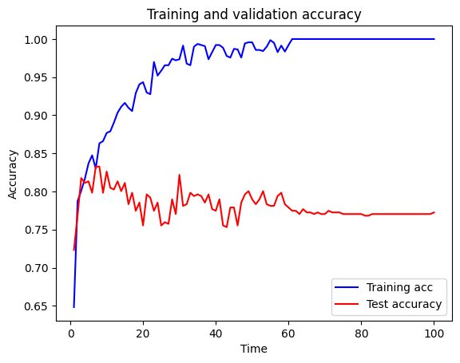
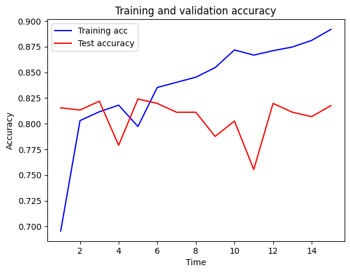
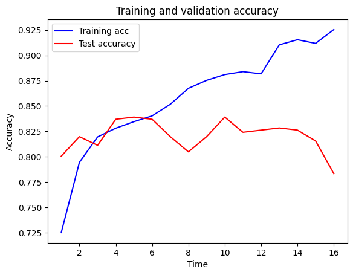

import matplotlib.pyplot as plt
import pandas as pd
import numpy as np
# sklearn for pre-processing
from sklearn.model_selection import train_test_split
from sklearn.preprocessing import MinMaxScaler
# TensorFlow sequential model
from tensorflow import keras
from tensorflow.keras import backend as K
from tensorflow.keras.models import Sequential
from tensorflow.keras.layers import BatchNormalization
from tensorflow.keras.layers import Dense
from tensorflow.keras.layers import Dropout
from tensorflow.keras.optimizers import Adam
# Download data
# (not required if running locally and have previously downloaded data)
download_required = True
if download_required:
# Download processed data:
address = 'https://raw.githubusercontent.com/MichaelAllen1966/' + \
'2004_titanic/master/jupyter_notebooks/data/hsma_stroke.csv'
data = pd.read_csv(address)
# Create a data subfolder if one does not already exist
import os
data_directory ='./data/'
if not os.path.exists(data_directory):
os.makedirs(data_directory)
# Save data to data subfolder
data.to_csv(data_directory + 'hsma_stroke.csv', index=False)12 Exercise Solution: Neural Networks (Stroke Thromobolysis Dataset)
The data loaded in this exercise is for seven acute stroke units, and whether a patient receives clost-busting treatment for stroke. There are lots of features, and a description of the features can be found in the file stroke_data_feature_descriptions.csv.
Train a Neural Network model to try to predict whether or not a stroke patient receives clot-busting treatment. Use the prompts below to write each section of code.
How accurate can you get your model on the test set?
Look at an overview of the data using the describe() method of Pandas.
data.describe()| Clotbuster given | Hosp_1 | Hosp_2 | Hosp_3 | Hosp_4 | Hosp_5 | Hosp_6 | Hosp_7 | Male | Age | ... | S2NihssArrivalFacialPalsy | S2NihssArrivalMotorArmLeft | S2NihssArrivalMotorArmRight | S2NihssArrivalMotorLegLeft | S2NihssArrivalMotorLegRight | S2NihssArrivalLimbAtaxia | S2NihssArrivalSensory | S2NihssArrivalBestLanguage | S2NihssArrivalDysarthria | S2NihssArrivalExtinctionInattention | |
|---|---|---|---|---|---|---|---|---|---|---|---|---|---|---|---|---|---|---|---|---|---|
| count | 1862.000000 | 1862.000000 | 1862.000000 | 1862.000000 | 1862.000000 | 1862.000000 | 1862.000000 | 1862.000000 | 1862.000000 | 1862.000000 | ... | 1862.000000 | 1862.000000 | 1862.000000 | 1862.000000 | 1862.000000 | 1862.000000 | 1862.000000 | 1862.000000 | 1862.000000 | 1862.000000 |
| mean | 0.403330 | 0.159506 | 0.142320 | 0.154672 | 0.165414 | 0.055854 | 0.113319 | 0.208915 | 0.515575 | 74.553706 | ... | 1.114930 | 1.002148 | 0.963480 | 0.963480 | 0.910849 | 0.216971 | 0.610097 | 0.944146 | 0.739527 | 0.566595 |
| std | 0.490698 | 0.366246 | 0.349472 | 0.361689 | 0.371653 | 0.229701 | 0.317068 | 0.406643 | 0.499892 | 12.280576 | ... | 0.930527 | 1.479211 | 1.441594 | 1.406501 | 1.380606 | 0.522643 | 0.771932 | 1.121379 | 0.731083 | 0.794000 |
| min | 0.000000 | 0.000000 | 0.000000 | 0.000000 | 0.000000 | 0.000000 | 0.000000 | 0.000000 | 0.000000 | 40.000000 | ... | 0.000000 | 0.000000 | 0.000000 | 0.000000 | 0.000000 | 0.000000 | 0.000000 | 0.000000 | 0.000000 | 0.000000 |
| 25% | 0.000000 | 0.000000 | 0.000000 | 0.000000 | 0.000000 | 0.000000 | 0.000000 | 0.000000 | 0.000000 | 67.000000 | ... | 0.000000 | 0.000000 | 0.000000 | 0.000000 | 0.000000 | 0.000000 | 0.000000 | 0.000000 | 0.000000 | 0.000000 |
| 50% | 0.000000 | 0.000000 | 0.000000 | 0.000000 | 0.000000 | 0.000000 | 0.000000 | 0.000000 | 1.000000 | 76.000000 | ... | 1.000000 | 0.000000 | 0.000000 | 0.000000 | 0.000000 | 0.000000 | 0.000000 | 0.000000 | 1.000000 | 0.000000 |
| 75% | 1.000000 | 0.000000 | 0.000000 | 0.000000 | 0.000000 | 0.000000 | 0.000000 | 0.000000 | 1.000000 | 83.000000 | ... | 2.000000 | 2.000000 | 2.000000 | 2.000000 | 2.000000 | 0.000000 | 1.000000 | 2.000000 | 1.000000 | 1.000000 |
| max | 1.000000 | 1.000000 | 1.000000 | 1.000000 | 1.000000 | 1.000000 | 1.000000 | 1.000000 | 1.000000 | 100.000000 | ... | 3.000000 | 4.000000 | 4.000000 | 4.000000 | 4.000000 | 2.000000 | 2.000000 | 3.000000 | 2.000000 | 2.000000 |
8 rows × 51 columns
Convert all of the data in the dataframe to type float, pull out the X (feature) and y (label) data, and put X and y into Numpy arrays.
data = data.astype(float)
X = data.drop('Clotbuster given', axis=1)
y = data['Clotbuster given']
X_np = X.values
y_np = y.valuesDefine a function that will MinMax Normalise training and test feature data passed into it.
def scale_data(X_train, X_test):
"""Scale data 0-1 based on min and max in training set"""
# Initialise a new scaling object for normalising input data
sc = MinMaxScaler()
# Apply the scaler to the training and test sets
train_sc = sc.fit_transform(X_train)
test_sc = sc.fit_transform(X_test)
return train_sc, test_scDefine a function that will build a sequential neural network, given a number of features, a number of hidden layers (with a default of 5), a number of neurons per hidden layer (with a default of 64), a dropout rate (with a default of 0), and a learning rate (with a default of 0.003). The function should also create a single neuron output layer with a Sigmoid activation function, use an Adam optimiser, and a Binary Crossentropy loss function, with accuracy as the performance metric.
def make_net(number_features,
hidden_layers=5,
hidden_layer_neurones=64,
dropout=0.0,
learning_rate=0.003):
"""Make TensorFlow neural net"""
# Clear Tensorflow
K.clear_session()
# Set up neural net
net = Sequential()
# Add hidden hidden_layers using a loop
for i in range(hidden_layers):
# Add fully connected layer with ReLu activation
net.add(Dense(
hidden_layer_neurones,
input_dim=number_features,
activation='relu'))
# Add droput layer
net.add(Dropout(dropout))
# Add final sigmoid activation output
net.add(Dense(1, activation='sigmoid'))
# Compiling model
opt = Adam(learning_rate=learning_rate)
net.compile(loss='binary_crossentropy',
optimizer=opt,
metrics=['accuracy'])
return netSplit your data into training and test sets. Decide on an appropriate test data size. Then scale the feature data using MinMax Normalisation.
# Split data
X_train, X_test, y_train, y_test = train_test_split(
X_np, y_np, test_size = 0.25, random_state=42)
# Scale X data
X_train_sc, X_test_sc = scale_data(X_train, X_test)Write a function to calculate accuracy of the model on both training and test sets.
def calculate_accuracy(model, X_train_sc, X_test_sc, y_train, y_test):
"""Calculate and print accuracy of training and test data fits"""
### Get accuracy of fit to training data
probability = model.predict(X_train_sc)
y_pred_train = probability >= 0.5
y_pred_train = y_pred_train.flatten()
accuracy_train = np.mean(y_pred_train == y_train)
### Get accuracy of fit to test data
probability = model.predict(X_test_sc)
y_pred_test = probability >= 0.5
y_pred_test = y_pred_test.flatten()
accuracy_test = np.mean(y_pred_test == y_test)
# Show acuracy
print (f'Training accuracy {accuracy_train:0.3f}')
print (f'Test accuracy {accuracy_test:0.3f}')Write a function to plot training and test set accuracy over time during model fitting.
def plot_training(history_dict):
acc_values = history_dict['accuracy']
val_acc_values = history_dict['val_accuracy']
epochs = range(1, len(acc_values) + 1)
fig, ax = plt.subplots()
ax.set_xlabel('Time')
ax.set_ylabel('Accuracy')
ax.plot(epochs, acc_values, color='blue', label='Training acc')
ax.plot(epochs, val_acc_values, color='red', label='Test accuracy')
ax.set_title('Training and validation accuracy')
ax.legend()
fig.show()Create a neural network with a number of hidden layers, neurons, dropout rate and learning rate of your choosing. Run the model for a number of epochs and with a batch size of your choosing (be careful about using large batch sizes unless you’ve got a CUDA-enabled GPU and TensorFlow is set up to use it).
# Define network
number_features = X_train_sc.shape[1]
model = make_net(number_features)
### Train model (and store training info in history)
history = model.fit(X_train_sc,
y_train,
epochs=100,
batch_size=32,
validation_data=(X_test_sc, y_test),
verbose=1)WARNING:tensorflow:From c:\Users\dan\anaconda3\envs\tf_hsma\Lib\site-packages\keras\src\backend\common\global_state.py:73: The name tf.reset_default_graph is deprecated. Please use tf.compat.v1.reset_default_graph instead.
Epoch 1/100
44/44 ━━━━━━━━━━━━━━━━━━━━ 1s 3ms/step - accuracy: 0.6053 - loss: 0.6310 - val_accuracy: 0.7232 - val_loss: 0.5111
Epoch 2/100
44/44 ━━━━━━━━━━━━━━━━━━━━ 0s 1ms/step - accuracy: 0.7871 - loss: 0.4625 - val_accuracy: 0.7682 - val_loss: 0.4507
Epoch 3/100
44/44 ━━━━━━━━━━━━━━━━━━━━ 0s 970us/step - accuracy: 0.8193 - loss: 0.4136 - val_accuracy: 0.8176 - val_loss: 0.4210
Epoch 4/100
44/44 ━━━━━━━━━━━━━━━━━━━━ 0s 960us/step - accuracy: 0.8137 - loss: 0.3941 - val_accuracy: 0.8112 - val_loss: 0.3919
Epoch 5/100
44/44 ━━━━━━━━━━━━━━━━━━━━ 0s 1ms/step - accuracy: 0.8437 - loss: 0.3576 - val_accuracy: 0.8133 - val_loss: 0.4186
Epoch 6/100
44/44 ━━━━━━━━━━━━━━━━━━━━ 0s 1ms/step - accuracy: 0.8605 - loss: 0.3330 - val_accuracy: 0.7983 - val_loss: 0.4143
Epoch 7/100
44/44 ━━━━━━━━━━━━━━━━━━━━ 0s 916us/step - accuracy: 0.8259 - loss: 0.3623 - val_accuracy: 0.8326 - val_loss: 0.3939
Epoch 8/100
44/44 ━━━━━━━━━━━━━━━━━━━━ 0s 1ms/step - accuracy: 0.8528 - loss: 0.3238 - val_accuracy: 0.8326 - val_loss: 0.4427
Epoch 9/100
44/44 ━━━━━━━━━━━━━━━━━━━━ 0s 997us/step - accuracy: 0.8667 - loss: 0.2907 - val_accuracy: 0.7983 - val_loss: 0.4531
Epoch 10/100
44/44 ━━━━━━━━━━━━━━━━━━━━ 0s 1ms/step - accuracy: 0.8759 - loss: 0.2771 - val_accuracy: 0.8262 - val_loss: 0.5343
Epoch 11/100
44/44 ━━━━━━━━━━━━━━━━━━━━ 0s 966us/step - accuracy: 0.8924 - loss: 0.2407 - val_accuracy: 0.8047 - val_loss: 0.5151
Epoch 12/100
44/44 ━━━━━━━━━━━━━━━━━━━━ 0s 961us/step - accuracy: 0.8852 - loss: 0.2259 - val_accuracy: 0.8026 - val_loss: 0.5504
Epoch 13/100
44/44 ━━━━━━━━━━━━━━━━━━━━ 0s 881us/step - accuracy: 0.9026 - loss: 0.2148 - val_accuracy: 0.8133 - val_loss: 0.6227
Epoch 14/100
44/44 ━━━━━━━━━━━━━━━━━━━━ 0s 963us/step - accuracy: 0.9062 - loss: 0.1986 - val_accuracy: 0.8004 - val_loss: 0.8707
Epoch 15/100
44/44 ━━━━━━━━━━━━━━━━━━━━ 0s 940us/step - accuracy: 0.9229 - loss: 0.1931 - val_accuracy: 0.8112 - val_loss: 0.7989
Epoch 16/100
44/44 ━━━━━━━━━━━━━━━━━━━━ 0s 888us/step - accuracy: 0.9072 - loss: 0.1717 - val_accuracy: 0.7833 - val_loss: 0.6860
Epoch 17/100
44/44 ━━━━━━━━━━━━━━━━━━━━ 0s 930us/step - accuracy: 0.9183 - loss: 0.1623 - val_accuracy: 0.7983 - val_loss: 0.8908
Epoch 18/100
44/44 ━━━━━━━━━━━━━━━━━━━━ 0s 992us/step - accuracy: 0.9408 - loss: 0.1574 - val_accuracy: 0.7747 - val_loss: 0.6969
Epoch 19/100
44/44 ━━━━━━━━━━━━━━━━━━━━ 0s 968us/step - accuracy: 0.9451 - loss: 0.1396 - val_accuracy: 0.7854 - val_loss: 0.8706
Epoch 20/100
44/44 ━━━━━━━━━━━━━━━━━━━━ 0s 924us/step - accuracy: 0.9475 - loss: 0.1148 - val_accuracy: 0.7554 - val_loss: 1.1075
Epoch 21/100
44/44 ━━━━━━━━━━━━━━━━━━━━ 0s 1ms/step - accuracy: 0.9511 - loss: 0.1186 - val_accuracy: 0.7961 - val_loss: 0.6700
Epoch 22/100
44/44 ━━━━━━━━━━━━━━━━━━━━ 0s 1ms/step - accuracy: 0.9314 - loss: 0.1808 - val_accuracy: 0.7918 - val_loss: 0.7345
Epoch 23/100
44/44 ━━━━━━━━━━━━━━━━━━━━ 0s 1ms/step - accuracy: 0.9701 - loss: 0.0757 - val_accuracy: 0.7747 - val_loss: 1.1924
Epoch 24/100
44/44 ━━━━━━━━━━━━━━━━━━━━ 0s 1ms/step - accuracy: 0.9593 - loss: 0.0831 - val_accuracy: 0.7854 - val_loss: 1.0050
Epoch 25/100
44/44 ━━━━━━━━━━━━━━━━━━━━ 0s 1ms/step - accuracy: 0.9634 - loss: 0.1004 - val_accuracy: 0.7554 - val_loss: 1.0066
Epoch 26/100
44/44 ━━━━━━━━━━━━━━━━━━━━ 0s 1ms/step - accuracy: 0.9648 - loss: 0.0856 - val_accuracy: 0.7597 - val_loss: 1.0974
Epoch 27/100
44/44 ━━━━━━━━━━━━━━━━━━━━ 0s 957us/step - accuracy: 0.9661 - loss: 0.0847 - val_accuracy: 0.7575 - val_loss: 1.1660
Epoch 28/100
44/44 ━━━━━━━━━━━━━━━━━━━━ 0s 1ms/step - accuracy: 0.9689 - loss: 0.0635 - val_accuracy: 0.7897 - val_loss: 1.2466
Epoch 29/100
44/44 ━━━━━━━━━━━━━━━━━━━━ 0s 997us/step - accuracy: 0.9821 - loss: 0.0489 - val_accuracy: 0.7704 - val_loss: 1.1211
Epoch 30/100
44/44 ━━━━━━━━━━━━━━━━━━━━ 0s 1ms/step - accuracy: 0.9667 - loss: 0.0809 - val_accuracy: 0.8219 - val_loss: 1.1547
Epoch 31/100
44/44 ━━━━━━━━━━━━━━━━━━━━ 0s 986us/step - accuracy: 0.9958 - loss: 0.0216 - val_accuracy: 0.7811 - val_loss: 1.6401
Epoch 32/100
44/44 ━━━━━━━━━━━━━━━━━━━━ 0s 879us/step - accuracy: 0.9728 - loss: 0.0752 - val_accuracy: 0.7833 - val_loss: 1.2428
Epoch 33/100
44/44 ━━━━━━━━━━━━━━━━━━━━ 0s 1ms/step - accuracy: 0.9781 - loss: 0.0615 - val_accuracy: 0.7983 - val_loss: 1.0353
Epoch 34/100
44/44 ━━━━━━━━━━━━━━━━━━━━ 0s 1ms/step - accuracy: 0.9903 - loss: 0.0351 - val_accuracy: 0.7940 - val_loss: 1.3027
Epoch 35/100
44/44 ━━━━━━━━━━━━━━━━━━━━ 0s 1ms/step - accuracy: 0.9939 - loss: 0.0128 - val_accuracy: 0.7961 - val_loss: 1.6230
Epoch 36/100
44/44 ━━━━━━━━━━━━━━━━━━━━ 0s 1ms/step - accuracy: 0.9948 - loss: 0.0153 - val_accuracy: 0.7940 - val_loss: 1.5783
Epoch 37/100
44/44 ━━━━━━━━━━━━━━━━━━━━ 0s 1ms/step - accuracy: 0.9911 - loss: 0.0221 - val_accuracy: 0.7854 - val_loss: 1.6514
Epoch 38/100
44/44 ━━━━━━━━━━━━━━━━━━━━ 0s 958us/step - accuracy: 0.9853 - loss: 0.0537 - val_accuracy: 0.7961 - val_loss: 1.1731
Epoch 39/100
44/44 ━━━━━━━━━━━━━━━━━━━━ 0s 1ms/step - accuracy: 0.9764 - loss: 0.0606 - val_accuracy: 0.7768 - val_loss: 1.3468
Epoch 40/100
44/44 ━━━━━━━━━━━━━━━━━━━━ 0s 1ms/step - accuracy: 0.9961 - loss: 0.0203 - val_accuracy: 0.7747 - val_loss: 1.4595
Epoch 41/100
44/44 ━━━━━━━━━━━━━━━━━━━━ 0s 1ms/step - accuracy: 0.9928 - loss: 0.0239 - val_accuracy: 0.7897 - val_loss: 1.5007
Epoch 42/100
44/44 ━━━━━━━━━━━━━━━━━━━━ 0s 1ms/step - accuracy: 0.9935 - loss: 0.0199 - val_accuracy: 0.7554 - val_loss: 1.5526
Epoch 43/100
44/44 ━━━━━━━━━━━━━━━━━━━━ 0s 1ms/step - accuracy: 0.9809 - loss: 0.0577 - val_accuracy: 0.7532 - val_loss: 1.4397
Epoch 44/100
44/44 ━━━━━━━━━━━━━━━━━━━━ 0s 1ms/step - accuracy: 0.9807 - loss: 0.0596 - val_accuracy: 0.7790 - val_loss: 1.0982
Epoch 45/100
44/44 ━━━━━━━━━━━━━━━━━━━━ 0s 1ms/step - accuracy: 0.9876 - loss: 0.0351 - val_accuracy: 0.7790 - val_loss: 1.3248
Epoch 46/100
44/44 ━━━━━━━━━━━━━━━━━━━━ 0s 938us/step - accuracy: 0.9907 - loss: 0.0292 - val_accuracy: 0.7554 - val_loss: 1.5941
Epoch 47/100
44/44 ━━━━━━━━━━━━━━━━━━━━ 0s 959us/step - accuracy: 0.9746 - loss: 0.0762 - val_accuracy: 0.7854 - val_loss: 1.1063
Epoch 48/100
44/44 ━━━━━━━━━━━━━━━━━━━━ 0s 1ms/step - accuracy: 0.9972 - loss: 0.0206 - val_accuracy: 0.7961 - val_loss: 1.4467
Epoch 49/100
44/44 ━━━━━━━━━━━━━━━━━━━━ 0s 1ms/step - accuracy: 0.9976 - loss: 0.0126 - val_accuracy: 0.8004 - val_loss: 1.6696
Epoch 50/100
44/44 ━━━━━━━━━━━━━━━━━━━━ 0s 1ms/step - accuracy: 0.9960 - loss: 0.0106 - val_accuracy: 0.7897 - val_loss: 1.7471
Epoch 51/100
44/44 ━━━━━━━━━━━━━━━━━━━━ 0s 1ms/step - accuracy: 0.9889 - loss: 0.0322 - val_accuracy: 0.7833 - val_loss: 1.3172
Epoch 52/100
44/44 ━━━━━━━━━━━━━━━━━━━━ 0s 931us/step - accuracy: 0.9873 - loss: 0.0337 - val_accuracy: 0.7897 - val_loss: 1.3244
Epoch 53/100
44/44 ━━━━━━━━━━━━━━━━━━━━ 0s 935us/step - accuracy: 0.9857 - loss: 0.0392 - val_accuracy: 0.8004 - val_loss: 1.2599
Epoch 54/100
44/44 ━━━━━━━━━━━━━━━━━━━━ 0s 1ms/step - accuracy: 0.9873 - loss: 0.0312 - val_accuracy: 0.7833 - val_loss: 1.4854
Epoch 55/100
44/44 ━━━━━━━━━━━━━━━━━━━━ 0s 1ms/step - accuracy: 0.9992 - loss: 0.0045 - val_accuracy: 0.7811 - val_loss: 1.6885
Epoch 56/100
44/44 ━━━━━━━━━━━━━━━━━━━━ 0s 931us/step - accuracy: 0.9953 - loss: 0.0109 - val_accuracy: 0.7811 - val_loss: 1.5901
Epoch 57/100
44/44 ━━━━━━━━━━━━━━━━━━━━ 0s 998us/step - accuracy: 0.9818 - loss: 0.0656 - val_accuracy: 0.7940 - val_loss: 1.1972
Epoch 58/100
44/44 ━━━━━━━━━━━━━━━━━━━━ 0s 975us/step - accuracy: 0.9936 - loss: 0.0192 - val_accuracy: 0.7983 - val_loss: 1.4499
Epoch 59/100
44/44 ━━━━━━━━━━━━━━━━━━━━ 0s 931us/step - accuracy: 0.9889 - loss: 0.0374 - val_accuracy: 0.7833 - val_loss: 1.2353
Epoch 60/100
44/44 ━━━━━━━━━━━━━━━━━━━━ 0s 1ms/step - accuracy: 0.9904 - loss: 0.0327 - val_accuracy: 0.7790 - val_loss: 1.4266
Epoch 61/100
44/44 ━━━━━━━━━━━━━━━━━━━━ 0s 918us/step - accuracy: 1.0000 - loss: 0.0035 - val_accuracy: 0.7747 - val_loss: 1.9654
Epoch 62/100
44/44 ━━━━━━━━━━━━━━━━━━━━ 0s 861us/step - accuracy: 1.0000 - loss: 3.3569e-04 - val_accuracy: 0.7747 - val_loss: 2.3092
Epoch 63/100
44/44 ━━━━━━━━━━━━━━━━━━━━ 0s 948us/step - accuracy: 1.0000 - loss: 1.6892e-04 - val_accuracy: 0.7704 - val_loss: 2.5314
Epoch 64/100
44/44 ━━━━━━━━━━━━━━━━━━━━ 0s 1ms/step - accuracy: 1.0000 - loss: 7.2569e-05 - val_accuracy: 0.7768 - val_loss: 2.6577
Epoch 65/100
44/44 ━━━━━━━━━━━━━━━━━━━━ 0s 1ms/step - accuracy: 1.0000 - loss: 7.2654e-05 - val_accuracy: 0.7725 - val_loss: 2.7705
Epoch 66/100
44/44 ━━━━━━━━━━━━━━━━━━━━ 0s 1ms/step - accuracy: 1.0000 - loss: 3.9437e-05 - val_accuracy: 0.7725 - val_loss: 2.8538
Epoch 67/100
44/44 ━━━━━━━━━━━━━━━━━━━━ 0s 1ms/step - accuracy: 1.0000 - loss: 4.1582e-05 - val_accuracy: 0.7704 - val_loss: 2.9289
Epoch 68/100
44/44 ━━━━━━━━━━━━━━━━━━━━ 0s 1ms/step - accuracy: 1.0000 - loss: 1.8892e-05 - val_accuracy: 0.7725 - val_loss: 2.9817
Epoch 69/100
44/44 ━━━━━━━━━━━━━━━━━━━━ 0s 1ms/step - accuracy: 1.0000 - loss: 1.8131e-05 - val_accuracy: 0.7704 - val_loss: 3.0400
Epoch 70/100
44/44 ━━━━━━━━━━━━━━━━━━━━ 0s 938us/step - accuracy: 1.0000 - loss: 1.9904e-05 - val_accuracy: 0.7704 - val_loss: 3.0946
Epoch 71/100
44/44 ━━━━━━━━━━━━━━━━━━━━ 0s 1ms/step - accuracy: 1.0000 - loss: 1.9827e-05 - val_accuracy: 0.7747 - val_loss: 3.1410
Epoch 72/100
44/44 ━━━━━━━━━━━━━━━━━━━━ 0s 1ms/step - accuracy: 1.0000 - loss: 1.7470e-05 - val_accuracy: 0.7725 - val_loss: 3.1845
Epoch 73/100
44/44 ━━━━━━━━━━━━━━━━━━━━ 0s 1ms/step - accuracy: 1.0000 - loss: 1.3605e-05 - val_accuracy: 0.7725 - val_loss: 3.2222
Epoch 74/100
44/44 ━━━━━━━━━━━━━━━━━━━━ 0s 1ms/step - accuracy: 1.0000 - loss: 1.0218e-05 - val_accuracy: 0.7725 - val_loss: 3.2573
Epoch 75/100
44/44 ━━━━━━━━━━━━━━━━━━━━ 0s 1ms/step - accuracy: 1.0000 - loss: 1.2152e-05 - val_accuracy: 0.7704 - val_loss: 3.2939
Epoch 76/100
44/44 ━━━━━━━━━━━━━━━━━━━━ 0s 1ms/step - accuracy: 1.0000 - loss: 1.1728e-05 - val_accuracy: 0.7704 - val_loss: 3.3254
Epoch 77/100
44/44 ━━━━━━━━━━━━━━━━━━━━ 0s 1ms/step - accuracy: 1.0000 - loss: 1.3472e-05 - val_accuracy: 0.7704 - val_loss: 3.3560
Epoch 78/100
44/44 ━━━━━━━━━━━━━━━━━━━━ 0s 1ms/step - accuracy: 1.0000 - loss: 8.8660e-06 - val_accuracy: 0.7704 - val_loss: 3.3849
Epoch 79/100
44/44 ━━━━━━━━━━━━━━━━━━━━ 0s 963us/step - accuracy: 1.0000 - loss: 5.7242e-06 - val_accuracy: 0.7704 - val_loss: 3.4115
Epoch 80/100
44/44 ━━━━━━━━━━━━━━━━━━━━ 0s 877us/step - accuracy: 1.0000 - loss: 6.4141e-06 - val_accuracy: 0.7704 - val_loss: 3.4389
Epoch 81/100
44/44 ━━━━━━━━━━━━━━━━━━━━ 0s 1ms/step - accuracy: 1.0000 - loss: 6.1472e-06 - val_accuracy: 0.7682 - val_loss: 3.4642
Epoch 82/100
44/44 ━━━━━━━━━━━━━━━━━━━━ 0s 1ms/step - accuracy: 1.0000 - loss: 3.6581e-06 - val_accuracy: 0.7682 - val_loss: 3.4863
Epoch 83/100
44/44 ━━━━━━━━━━━━━━━━━━━━ 0s 1ms/step - accuracy: 1.0000 - loss: 4.8500e-06 - val_accuracy: 0.7704 - val_loss: 3.5141
Epoch 84/100
44/44 ━━━━━━━━━━━━━━━━━━━━ 0s 921us/step - accuracy: 1.0000 - loss: 6.0898e-06 - val_accuracy: 0.7704 - val_loss: 3.5375
Epoch 85/100
44/44 ━━━━━━━━━━━━━━━━━━━━ 0s 1ms/step - accuracy: 1.0000 - loss: 4.9514e-06 - val_accuracy: 0.7704 - val_loss: 3.5587
Epoch 86/100
44/44 ━━━━━━━━━━━━━━━━━━━━ 0s 991us/step - accuracy: 1.0000 - loss: 7.3356e-06 - val_accuracy: 0.7704 - val_loss: 3.5808
Epoch 87/100
44/44 ━━━━━━━━━━━━━━━━━━━━ 0s 899us/step - accuracy: 1.0000 - loss: 4.5561e-06 - val_accuracy: 0.7704 - val_loss: 3.6012
Epoch 88/100
44/44 ━━━━━━━━━━━━━━━━━━━━ 0s 1ms/step - accuracy: 1.0000 - loss: 4.4042e-06 - val_accuracy: 0.7704 - val_loss: 3.6212
Epoch 89/100
44/44 ━━━━━━━━━━━━━━━━━━━━ 0s 960us/step - accuracy: 1.0000 - loss: 4.5633e-06 - val_accuracy: 0.7704 - val_loss: 3.6406
Epoch 90/100
44/44 ━━━━━━━━━━━━━━━━━━━━ 0s 926us/step - accuracy: 1.0000 - loss: 2.7448e-06 - val_accuracy: 0.7704 - val_loss: 3.6579
Epoch 91/100
44/44 ━━━━━━━━━━━━━━━━━━━━ 0s 2ms/step - accuracy: 1.0000 - loss: 3.4195e-06 - val_accuracy: 0.7704 - val_loss: 3.6789
Epoch 92/100
44/44 ━━━━━━━━━━━━━━━━━━━━ 0s 1ms/step - accuracy: 1.0000 - loss: 3.9085e-06 - val_accuracy: 0.7704 - val_loss: 3.6972
Epoch 93/100
44/44 ━━━━━━━━━━━━━━━━━━━━ 0s 1ms/step - accuracy: 1.0000 - loss: 3.2672e-06 - val_accuracy: 0.7704 - val_loss: 3.7148
Epoch 94/100
44/44 ━━━━━━━━━━━━━━━━━━━━ 0s 1ms/step - accuracy: 1.0000 - loss: 3.3254e-06 - val_accuracy: 0.7704 - val_loss: 3.7319
Epoch 95/100
44/44 ━━━━━━━━━━━━━━━━━━━━ 0s 930us/step - accuracy: 1.0000 - loss: 2.4199e-06 - val_accuracy: 0.7704 - val_loss: 3.7486
Epoch 96/100
44/44 ━━━━━━━━━━━━━━━━━━━━ 0s 1ms/step - accuracy: 1.0000 - loss: 2.1130e-06 - val_accuracy: 0.7704 - val_loss: 3.7652
Epoch 97/100
44/44 ━━━━━━━━━━━━━━━━━━━━ 0s 1ms/step - accuracy: 1.0000 - loss: 2.6757e-06 - val_accuracy: 0.7704 - val_loss: 3.7820
Epoch 98/100
44/44 ━━━━━━━━━━━━━━━━━━━━ 0s 1ms/step - accuracy: 1.0000 - loss: 1.7106e-06 - val_accuracy: 0.7704 - val_loss: 3.7969
Epoch 99/100
44/44 ━━━━━━━━━━━━━━━━━━━━ 0s 1ms/step - accuracy: 1.0000 - loss: 2.0971e-06 - val_accuracy: 0.7704 - val_loss: 3.8135
Epoch 100/100
44/44 ━━━━━━━━━━━━━━━━━━━━ 0s 1ms/step - accuracy: 1.0000 - loss: 1.5652e-06 - val_accuracy: 0.7725 - val_loss: 3.8275c:\Users\dan\anaconda3\envs\tf_hsma\Lib\site-packages\keras\src\layers\core\dense.py:88: UserWarning: Do not pass an `input_shape`/`input_dim` argument to a layer. When using Sequential models, prefer using an `Input(shape)` object as the first layer in the model instead.
super().__init__(activity_regularizer=activity_regularizer, **kwargs)Calculate training and test set accuracy of your model.
calculate_accuracy(model, X_train_sc, X_test_sc, y_train, y_test)44/44 ━━━━━━━━━━━━━━━━━━━━ 0s 1ms/step
15/15 ━━━━━━━━━━━━━━━━━━━━ 0s 549us/step
Training accuracy 1.000
Test accuracy 0.773Plot training and test set accuracy over time during fitting.
history_dict = history.history
history_dict.keys()
plot_training(history.history)C:\Users\dan\AppData\Local\Temp\ipykernel_31272\832266572.py:17: UserWarning: FigureCanvasAgg is non-interactive, and thus cannot be shown
fig.show()
Save this baseline version of your model, so you can access it again later if you need it.
# Save model
model.save('baseline_stroke_dan.keras')Now try different things in your model to improve test accuracy. You might consider : - Reducing overfitting if overfitting is a problem. - Changing the number of hidden layers - Changing the number of hidden neurons - Changing batch size - Changing dropout rate - Changing the learning rate - Changing the train / test split - Trying stratified k-fold validation - Dropping features
or more!
Tip : keep your analysis above as your base case. Then below, just use the functions you’ve built to rebuild and retrain models with different parameters (or run altered versions of other cells below). Don’t forget, you need to build and train again before you get new outputs.
Add comments to your code to explain what you’ve changed, and change things a bit at a time (don’t change everything all at once!)
"""Add EarlyStopping with 10 epoch patience, and restore best weights"""
checkpoint_cb = keras.callbacks.ModelCheckpoint(
'model_checkpoint.keras', save_best_only=True)
# Define early stopping callback
early_stopping_cb = keras.callbacks.EarlyStopping(
patience=10, restore_best_weights=True)
# Define network
number_features = X_train_sc.shape[1]
model = make_net(number_features)
### Train model (and store training info in history)
history = model.fit(X_train_sc,
y_train,
epochs=100,
batch_size=32,
validation_data=(X_test_sc, y_test),
verbose=1,
callbacks=[checkpoint_cb, early_stopping_cb])Epoch 1/100
44/44 ━━━━━━━━━━━━━━━━━━━━ 1s 3ms/step - accuracy: 0.6107 - loss: 0.6270 - val_accuracy: 0.8155 - val_loss: 0.4071
Epoch 2/100
44/44 ━━━━━━━━━━━━━━━━━━━━ 0s 1ms/step - accuracy: 0.7961 - loss: 0.4391 - val_accuracy: 0.8133 - val_loss: 0.3966
Epoch 3/100
44/44 ━━━━━━━━━━━━━━━━━━━━ 0s 1ms/step - accuracy: 0.8156 - loss: 0.4099 - val_accuracy: 0.8219 - val_loss: 0.3931
Epoch 4/100
44/44 ━━━━━━━━━━━━━━━━━━━━ 0s 1ms/step - accuracy: 0.8115 - loss: 0.4034 - val_accuracy: 0.7790 - val_loss: 0.5224
Epoch 5/100
44/44 ━━━━━━━━━━━━━━━━━━━━ 0s 1ms/step - accuracy: 0.7804 - loss: 0.4493 - val_accuracy: 0.8240 - val_loss: 0.3890
Epoch 6/100
44/44 ━━━━━━━━━━━━━━━━━━━━ 0s 1ms/step - accuracy: 0.8438 - loss: 0.3663 - val_accuracy: 0.8197 - val_loss: 0.3900
Epoch 7/100
44/44 ━━━━━━━━━━━━━━━━━━━━ 0s 1ms/step - accuracy: 0.8591 - loss: 0.3349 - val_accuracy: 0.8112 - val_loss: 0.4120
Epoch 8/100
44/44 ━━━━━━━━━━━━━━━━━━━━ 0s 1ms/step - accuracy: 0.8278 - loss: 0.3703 - val_accuracy: 0.8112 - val_loss: 0.4029
Epoch 9/100
44/44 ━━━━━━━━━━━━━━━━━━━━ 0s 1ms/step - accuracy: 0.8594 - loss: 0.3229 - val_accuracy: 0.7876 - val_loss: 0.4435
Epoch 10/100
44/44 ━━━━━━━━━━━━━━━━━━━━ 0s 1ms/step - accuracy: 0.8776 - loss: 0.3051 - val_accuracy: 0.8026 - val_loss: 0.4627
Epoch 11/100
44/44 ━━━━━━━━━━━━━━━━━━━━ 0s 991us/step - accuracy: 0.8698 - loss: 0.2934 - val_accuracy: 0.7554 - val_loss: 0.6602
Epoch 12/100
44/44 ━━━━━━━━━━━━━━━━━━━━ 0s 967us/step - accuracy: 0.8655 - loss: 0.2906 - val_accuracy: 0.8197 - val_loss: 0.4412
Epoch 13/100
44/44 ━━━━━━━━━━━━━━━━━━━━ 0s 991us/step - accuracy: 0.8786 - loss: 0.2782 - val_accuracy: 0.8112 - val_loss: 0.4730
Epoch 14/100
44/44 ━━━━━━━━━━━━━━━━━━━━ 0s 1ms/step - accuracy: 0.8936 - loss: 0.2298 - val_accuracy: 0.8069 - val_loss: 0.5321
Epoch 15/100
44/44 ━━━━━━━━━━━━━━━━━━━━ 0s 997us/step - accuracy: 0.9035 - loss: 0.2295 - val_accuracy: 0.8176 - val_loss: 0.5017calculate_accuracy(model, X_train_sc, X_test_sc, y_train, y_test)44/44 ━━━━━━━━━━━━━━━━━━━━ 0s 992us/step
15/15 ━━━━━━━━━━━━━━━━━━━━ 0s 529us/step
Training accuracy 0.835
Test accuracy 0.824plot_training(history.history)C:\Users\dan\AppData\Local\Temp\ipykernel_31272\832266572.py:17: UserWarning: FigureCanvasAgg is non-interactive, and thus cannot be shown
fig.show()
"""Keep EarlyStopping with 10 epoch patience, and restore best weights.
Reduce number of hidden layers to 3 (from 5)
"""
checkpoint_cb = keras.callbacks.ModelCheckpoint(
'model_checkpoint.keras', save_best_only=True)
# Define early stopping callback
early_stopping_cb = keras.callbacks.EarlyStopping(
patience=10, restore_best_weights=True)
# Define network
number_features = X_train_sc.shape[1]
model = make_net(number_features, hidden_layers=3)
### Train model (and store training info in history)
history = model.fit(X_train_sc,
y_train,
epochs=100,
batch_size=32,
validation_data=(X_test_sc, y_test),
verbose=1,
callbacks=[checkpoint_cb, early_stopping_cb])Epoch 1/100
44/44 ━━━━━━━━━━━━━━━━━━━━ 1s 3ms/step - accuracy: 0.6508 - loss: 0.6134 - val_accuracy: 0.8004 - val_loss: 0.4267
Epoch 2/100
44/44 ━━━━━━━━━━━━━━━━━━━━ 0s 1ms/step - accuracy: 0.7875 - loss: 0.4342 - val_accuracy: 0.8197 - val_loss: 0.3939
Epoch 3/100
44/44 ━━━━━━━━━━━━━━━━━━━━ 0s 1ms/step - accuracy: 0.8147 - loss: 0.4055 - val_accuracy: 0.8112 - val_loss: 0.3909
Epoch 4/100
44/44 ━━━━━━━━━━━━━━━━━━━━ 0s 1ms/step - accuracy: 0.8235 - loss: 0.3869 - val_accuracy: 0.8369 - val_loss: 0.3855
Epoch 5/100
44/44 ━━━━━━━━━━━━━━━━━━━━ 0s 1ms/step - accuracy: 0.8459 - loss: 0.3681 - val_accuracy: 0.8391 - val_loss: 0.3859
Epoch 6/100
44/44 ━━━━━━━━━━━━━━━━━━━━ 0s 1ms/step - accuracy: 0.8339 - loss: 0.3546 - val_accuracy: 0.8369 - val_loss: 0.3840
Epoch 7/100
44/44 ━━━━━━━━━━━━━━━━━━━━ 0s 1ms/step - accuracy: 0.8555 - loss: 0.3348 - val_accuracy: 0.8197 - val_loss: 0.4127
Epoch 8/100
44/44 ━━━━━━━━━━━━━━━━━━━━ 0s 956us/step - accuracy: 0.8794 - loss: 0.3000 - val_accuracy: 0.8047 - val_loss: 0.4339
Epoch 9/100
44/44 ━━━━━━━━━━━━━━━━━━━━ 0s 938us/step - accuracy: 0.8790 - loss: 0.2948 - val_accuracy: 0.8197 - val_loss: 0.4363
Epoch 10/100
44/44 ━━━━━━━━━━━━━━━━━━━━ 0s 1ms/step - accuracy: 0.8838 - loss: 0.2697 - val_accuracy: 0.8391 - val_loss: 0.4655
Epoch 11/100
44/44 ━━━━━━━━━━━━━━━━━━━━ 0s 992us/step - accuracy: 0.8887 - loss: 0.2523 - val_accuracy: 0.8240 - val_loss: 0.5127
Epoch 12/100
44/44 ━━━━━━━━━━━━━━━━━━━━ 0s 929us/step - accuracy: 0.8853 - loss: 0.2642 - val_accuracy: 0.8262 - val_loss: 0.4821
Epoch 13/100
44/44 ━━━━━━━━━━━━━━━━━━━━ 0s 862us/step - accuracy: 0.9054 - loss: 0.2427 - val_accuracy: 0.8283 - val_loss: 0.5086
Epoch 14/100
44/44 ━━━━━━━━━━━━━━━━━━━━ 0s 1ms/step - accuracy: 0.9248 - loss: 0.1904 - val_accuracy: 0.8262 - val_loss: 0.5621
Epoch 15/100
44/44 ━━━━━━━━━━━━━━━━━━━━ 0s 1ms/step - accuracy: 0.9099 - loss: 0.2048 - val_accuracy: 0.8155 - val_loss: 0.6487
Epoch 16/100
44/44 ━━━━━━━━━━━━━━━━━━━━ 0s 916us/step - accuracy: 0.9298 - loss: 0.1772 - val_accuracy: 0.7833 - val_loss: 0.7619calculate_accuracy(model, X_train_sc, X_test_sc, y_train, y_test)44/44 ━━━━━━━━━━━━━━━━━━━━ 0s 868us/step
15/15 ━━━━━━━━━━━━━━━━━━━━ 0s 650us/step
Training accuracy 0.866
Test accuracy 0.837plot_training(history.history)C:\Users\dan\AppData\Local\Temp\ipykernel_31272\832266572.py:17: UserWarning: FigureCanvasAgg is non-interactive, and thus cannot be shown
fig.show()
"""Keep EarlyStopping and 3 hidden layers.
Add dropout with rate of 0.5
"""
checkpoint_cb = keras.callbacks.ModelCheckpoint(
'model_checkpoint.keras', save_best_only=True)
# Define early stopping callback
early_stopping_cb = keras.callbacks.EarlyStopping(
patience=10, restore_best_weights=True)
# Define network
number_features = X_train_sc.shape[1]
model = make_net(number_features, hidden_layers=3, dropout=0.5)
### Train model (and store training info in history)
history = model.fit(X_train_sc,
y_train,
epochs=100,
batch_size=32,
validation_data=(X_test_sc, y_test),
verbose=1,
callbacks=[checkpoint_cb, early_stopping_cb])Epoch 1/100
44/44 ━━━━━━━━━━━━━━━━━━━━ 1s 3ms/step - accuracy: 0.5520 - loss: 0.6732 - val_accuracy: 0.7339 - val_loss: 0.5768
Epoch 2/100
44/44 ━━━━━━━━━━━━━━━━━━━━ 0s 1ms/step - accuracy: 0.6873 - loss: 0.5617 - val_accuracy: 0.8283 - val_loss: 0.4466
Epoch 3/100
44/44 ━━━━━━━━━━━━━━━━━━━━ 0s 2ms/step - accuracy: 0.7454 - loss: 0.5279 - val_accuracy: 0.8176 - val_loss: 0.4190
Epoch 4/100
44/44 ━━━━━━━━━━━━━━━━━━━━ 0s 1ms/step - accuracy: 0.7650 - loss: 0.5017 - val_accuracy: 0.8348 - val_loss: 0.4051
Epoch 5/100
44/44 ━━━━━━━━━━━━━━━━━━━━ 0s 1ms/step - accuracy: 0.7930 - loss: 0.4507 - val_accuracy: 0.8262 - val_loss: 0.4038
Epoch 6/100
44/44 ━━━━━━━━━━━━━━━━━━━━ 0s 1ms/step - accuracy: 0.7885 - loss: 0.4564 - val_accuracy: 0.8155 - val_loss: 0.3887
Epoch 7/100
44/44 ━━━━━━━━━━━━━━━━━━━━ 0s 1ms/step - accuracy: 0.7976 - loss: 0.4555 - val_accuracy: 0.8219 - val_loss: 0.3939
Epoch 8/100
44/44 ━━━━━━━━━━━━━━━━━━━━ 0s 1ms/step - accuracy: 0.8125 - loss: 0.4141 - val_accuracy: 0.8262 - val_loss: 0.3924
Epoch 9/100
44/44 ━━━━━━━━━━━━━━━━━━━━ 0s 958us/step - accuracy: 0.8250 - loss: 0.4037 - val_accuracy: 0.8262 - val_loss: 0.3944
Epoch 10/100
44/44 ━━━━━━━━━━━━━━━━━━━━ 0s 945us/step - accuracy: 0.7960 - loss: 0.4407 - val_accuracy: 0.8155 - val_loss: 0.3962
Epoch 11/100
44/44 ━━━━━━━━━━━━━━━━━━━━ 0s 1ms/step - accuracy: 0.8085 - loss: 0.4200 - val_accuracy: 0.8069 - val_loss: 0.3916
Epoch 12/100
44/44 ━━━━━━━━━━━━━━━━━━━━ 0s 995us/step - accuracy: 0.8281 - loss: 0.3999 - val_accuracy: 0.8219 - val_loss: 0.3949
Epoch 13/100
44/44 ━━━━━━━━━━━━━━━━━━━━ 0s 1ms/step - accuracy: 0.8235 - loss: 0.3940 - val_accuracy: 0.8219 - val_loss: 0.3828
Epoch 14/100
44/44 ━━━━━━━━━━━━━━━━━━━━ 0s 1ms/step - accuracy: 0.8165 - loss: 0.3901 - val_accuracy: 0.8197 - val_loss: 0.3931
Epoch 15/100
44/44 ━━━━━━━━━━━━━━━━━━━━ 0s 1ms/step - accuracy: 0.8400 - loss: 0.3738 - val_accuracy: 0.8262 - val_loss: 0.3871
Epoch 16/100
44/44 ━━━━━━━━━━━━━━━━━━━━ 0s 1ms/step - accuracy: 0.8179 - loss: 0.3934 - val_accuracy: 0.8047 - val_loss: 0.4043
Epoch 17/100
44/44 ━━━━━━━━━━━━━━━━━━━━ 0s 1ms/step - accuracy: 0.8340 - loss: 0.4029 - val_accuracy: 0.8004 - val_loss: 0.4027
Epoch 18/100
44/44 ━━━━━━━━━━━━━━━━━━━━ 0s 914us/step - accuracy: 0.8297 - loss: 0.3927 - val_accuracy: 0.8240 - val_loss: 0.3883
Epoch 19/100
44/44 ━━━━━━━━━━━━━━━━━━━━ 0s 1ms/step - accuracy: 0.8325 - loss: 0.3957 - val_accuracy: 0.8004 - val_loss: 0.4047
Epoch 20/100
44/44 ━━━━━━━━━━━━━━━━━━━━ 0s 1ms/step - accuracy: 0.8406 - loss: 0.3817 - val_accuracy: 0.8069 - val_loss: 0.4060
Epoch 21/100
44/44 ━━━━━━━━━━━━━━━━━━━━ 0s 1ms/step - accuracy: 0.8344 - loss: 0.3684 - val_accuracy: 0.7961 - val_loss: 0.4106
Epoch 22/100
44/44 ━━━━━━━━━━━━━━━━━━━━ 0s 1ms/step - accuracy: 0.8493 - loss: 0.3780 - val_accuracy: 0.7918 - val_loss: 0.4022
Epoch 23/100
44/44 ━━━━━━━━━━━━━━━━━━━━ 0s 1ms/step - accuracy: 0.8283 - loss: 0.3681 - val_accuracy: 0.8112 - val_loss: 0.4149calculate_accuracy(model, X_train_sc, X_test_sc, y_train, y_test)44/44 ━━━━━━━━━━━━━━━━━━━━ 0s 822us/step
15/15 ━━━━━━━━━━━━━━━━━━━━ 0s 375us/step
Training accuracy 0.837
Test accuracy 0.822"""Keep EarlyStopping, 3 hidden layers and 0.5 dropout.
Change to 32 hidden layer neurons (from 64)
"""
checkpoint_cb = keras.callbacks.ModelCheckpoint(
'model_checkpoint.keras', save_best_only=True)
# Define early stopping callback
early_stopping_cb = keras.callbacks.EarlyStopping(
patience=10, restore_best_weights=True)
# Define network
number_features = X_train_sc.shape[1]
model = make_net(number_features, hidden_layers=3, dropout=0.5,
hidden_layer_neurones=32)
### Train model (and store training info in history)
history = model.fit(X_train_sc,
y_train,
epochs=100,
batch_size=32,
validation_data=(X_test_sc, y_test),
verbose=1,
callbacks=[checkpoint_cb, early_stopping_cb])Epoch 1/100
44/44 ━━━━━━━━━━━━━━━━━━━━ 1s 3ms/step - accuracy: 0.5521 - loss: 0.7286 - val_accuracy: 0.6030 - val_loss: 0.6366
Epoch 2/100
44/44 ━━━━━━━━━━━━━━━━━━━━ 0s 1ms/step - accuracy: 0.5799 - loss: 0.6559 - val_accuracy: 0.6931 - val_loss: 0.5837
Epoch 3/100
44/44 ━━━━━━━━━━━━━━━━━━━━ 0s 1ms/step - accuracy: 0.6458 - loss: 0.6387 - val_accuracy: 0.7489 - val_loss: 0.5316
Epoch 4/100
44/44 ━━━━━━━━━━━━━━━━━━━━ 0s 1ms/step - accuracy: 0.6782 - loss: 0.5821 - val_accuracy: 0.8090 - val_loss: 0.4784
Epoch 5/100
44/44 ━━━━━━━━━━━━━━━━━━━━ 0s 1ms/step - accuracy: 0.7050 - loss: 0.5606 - val_accuracy: 0.7983 - val_loss: 0.4451
Epoch 6/100
44/44 ━━━━━━━━━━━━━━━━━━━━ 0s 1ms/step - accuracy: 0.7499 - loss: 0.5106 - val_accuracy: 0.8197 - val_loss: 0.4301
Epoch 7/100
44/44 ━━━━━━━━━━━━━━━━━━━━ 0s 1ms/step - accuracy: 0.7868 - loss: 0.4857 - val_accuracy: 0.8112 - val_loss: 0.4158
Epoch 8/100
44/44 ━━━━━━━━━━━━━━━━━━━━ 0s 1ms/step - accuracy: 0.7849 - loss: 0.4531 - val_accuracy: 0.8412 - val_loss: 0.3920
Epoch 9/100
44/44 ━━━━━━━━━━━━━━━━━━━━ 0s 1ms/step - accuracy: 0.7752 - loss: 0.4861 - val_accuracy: 0.8348 - val_loss: 0.3976
Epoch 10/100
44/44 ━━━━━━━━━━━━━━━━━━━━ 0s 1ms/step - accuracy: 0.7822 - loss: 0.4594 - val_accuracy: 0.8348 - val_loss: 0.3914
Epoch 11/100
44/44 ━━━━━━━━━━━━━━━━━━━━ 0s 971us/step - accuracy: 0.7885 - loss: 0.4631 - val_accuracy: 0.8326 - val_loss: 0.3998
Epoch 12/100
44/44 ━━━━━━━━━━━━━━━━━━━━ 0s 1ms/step - accuracy: 0.7685 - loss: 0.5016 - val_accuracy: 0.8348 - val_loss: 0.3889
Epoch 13/100
44/44 ━━━━━━━━━━━━━━━━━━━━ 0s 1ms/step - accuracy: 0.8031 - loss: 0.4424 - val_accuracy: 0.8369 - val_loss: 0.3759
Epoch 14/100
44/44 ━━━━━━━━━━━━━━━━━━━━ 0s 1ms/step - accuracy: 0.8167 - loss: 0.4183 - val_accuracy: 0.8476 - val_loss: 0.3722
Epoch 15/100
44/44 ━━━━━━━━━━━━━━━━━━━━ 0s 1ms/step - accuracy: 0.8213 - loss: 0.4152 - val_accuracy: 0.8240 - val_loss: 0.3798
Epoch 16/100
44/44 ━━━━━━━━━━━━━━━━━━━━ 0s 1ms/step - accuracy: 0.8163 - loss: 0.4082 - val_accuracy: 0.8305 - val_loss: 0.3910
Epoch 17/100
44/44 ━━━━━━━━━━━━━━━━━━━━ 0s 942us/step - accuracy: 0.8055 - loss: 0.4163 - val_accuracy: 0.8283 - val_loss: 0.3822
Epoch 18/100
44/44 ━━━━━━━━━━━━━━━━━━━━ 0s 1ms/step - accuracy: 0.8019 - loss: 0.4332 - val_accuracy: 0.8369 - val_loss: 0.3796
Epoch 19/100
44/44 ━━━━━━━━━━━━━━━━━━━━ 0s 934us/step - accuracy: 0.8201 - loss: 0.4099 - val_accuracy: 0.8412 - val_loss: 0.3780
Epoch 20/100
44/44 ━━━━━━━━━━━━━━━━━━━━ 0s 850us/step - accuracy: 0.8199 - loss: 0.3930 - val_accuracy: 0.8219 - val_loss: 0.3830
Epoch 21/100
44/44 ━━━━━━━━━━━━━━━━━━━━ 0s 1ms/step - accuracy: 0.8101 - loss: 0.4252 - val_accuracy: 0.8326 - val_loss: 0.3770
Epoch 22/100
44/44 ━━━━━━━━━━━━━━━━━━━━ 0s 1ms/step - accuracy: 0.8142 - loss: 0.3924 - val_accuracy: 0.8283 - val_loss: 0.3833
Epoch 23/100
44/44 ━━━━━━━━━━━━━━━━━━━━ 0s 1ms/step - accuracy: 0.7955 - loss: 0.4265 - val_accuracy: 0.8326 - val_loss: 0.3724
Epoch 24/100
44/44 ━━━━━━━━━━━━━━━━━━━━ 0s 2ms/step - accuracy: 0.8231 - loss: 0.3923 - val_accuracy: 0.8219 - val_loss: 0.3774calculate_accuracy(model, X_train_sc, X_test_sc, y_train, y_test)44/44 ━━━━━━━━━━━━━━━━━━━━ 0s 862us/step
15/15 ━━━━━━━━━━━━━━━━━━━━ 0s 720us/step
Training accuracy 0.832
Test accuracy 0.848In the following cells, I walk through an example of dropping one of the features (whether the patient has diabetes) from the data as an example of how you would do this. In practice, you should do this following some analysis via Explainable AI methods, such as the use of Shapley values, which you will learn about in session 4G.
# We cut from X, which already has the label ("Clotbuster given") dropped
# We can use the same y as before
X_cut = X.drop('Diabetes', axis=1)
X_np_cut = X_cut.values# Split data
X_train, X_test, y_train, y_test = train_test_split(
X_np_cut, y_np, test_size = 0.25, random_state=42)
# Scale X data
X_train_sc, X_test_sc = scale_data(X_train, X_test)"""Keep EarlyStopping, 3 hidden layers, 0.5 dropout, and 32 hidden layer
neurons.
Dropped 'diabetes' feature from data.
"""
checkpoint_cb = keras.callbacks.ModelCheckpoint(
'model_checkpoint.keras', save_best_only=True)
# Define early stopping callback
early_stopping_cb = keras.callbacks.EarlyStopping(
patience=10, restore_best_weights=True)
# Define network
number_features = X_train_sc.shape[1]
model = make_net(number_features, hidden_layers=3, dropout=0.5,
hidden_layer_neurones=32)
### Train model (and store training info in history)
history = model.fit(X_train_sc,
y_train,
epochs=100,
batch_size=32,
validation_data=(X_test_sc, y_test),
verbose=1,
callbacks=[checkpoint_cb, early_stopping_cb])Epoch 1/100
44/44 ━━━━━━━━━━━━━━━━━━━━ 1s 3ms/step - accuracy: 0.5255 - loss: 0.7121 - val_accuracy: 0.6009 - val_loss: 0.6663
Epoch 2/100
44/44 ━━━━━━━━━━━━━━━━━━━━ 0s 2ms/step - accuracy: 0.6119 - loss: 0.6685 - val_accuracy: 0.6137 - val_loss: 0.6449
Epoch 3/100
44/44 ━━━━━━━━━━━━━━━━━━━━ 0s 1ms/step - accuracy: 0.6093 - loss: 0.6471 - val_accuracy: 0.6931 - val_loss: 0.5566
Epoch 4/100
44/44 ━━━━━━━━━━━━━━━━━━━━ 0s 2ms/step - accuracy: 0.6685 - loss: 0.5886 - val_accuracy: 0.7854 - val_loss: 0.4961
Epoch 5/100
44/44 ━━━━━━━━━━━━━━━━━━━━ 0s 1ms/step - accuracy: 0.6935 - loss: 0.5392 - val_accuracy: 0.8026 - val_loss: 0.4620
Epoch 6/100
44/44 ━━━━━━━━━━━━━━━━━━━━ 0s 1ms/step - accuracy: 0.7225 - loss: 0.5247 - val_accuracy: 0.7918 - val_loss: 0.4429
Epoch 7/100
44/44 ━━━━━━━━━━━━━━━━━━━━ 0s 2ms/step - accuracy: 0.7649 - loss: 0.4968 - val_accuracy: 0.8112 - val_loss: 0.4242
Epoch 8/100
44/44 ━━━━━━━━━━━━━━━━━━━━ 0s 1ms/step - accuracy: 0.7832 - loss: 0.5054 - val_accuracy: 0.8112 - val_loss: 0.4209
Epoch 9/100
44/44 ━━━━━━━━━━━━━━━━━━━━ 0s 1ms/step - accuracy: 0.7763 - loss: 0.4727 - val_accuracy: 0.8197 - val_loss: 0.4113
Epoch 10/100
44/44 ━━━━━━━━━━━━━━━━━━━━ 0s 1ms/step - accuracy: 0.8052 - loss: 0.4480 - val_accuracy: 0.8112 - val_loss: 0.4108
Epoch 11/100
44/44 ━━━━━━━━━━━━━━━━━━━━ 0s 1ms/step - accuracy: 0.7930 - loss: 0.4660 - val_accuracy: 0.8133 - val_loss: 0.3960
Epoch 12/100
44/44 ━━━━━━━━━━━━━━━━━━━━ 0s 1ms/step - accuracy: 0.7972 - loss: 0.4456 - val_accuracy: 0.8197 - val_loss: 0.3940
Epoch 13/100
44/44 ━━━━━━━━━━━━━━━━━━━━ 0s 1ms/step - accuracy: 0.7865 - loss: 0.4443 - val_accuracy: 0.8176 - val_loss: 0.4032
Epoch 14/100
44/44 ━━━━━━━━━━━━━━━━━━━━ 0s 1ms/step - accuracy: 0.7971 - loss: 0.4593 - val_accuracy: 0.8112 - val_loss: 0.3945
Epoch 15/100
44/44 ━━━━━━━━━━━━━━━━━━━━ 0s 1ms/step - accuracy: 0.7964 - loss: 0.4329 - val_accuracy: 0.8090 - val_loss: 0.3985
Epoch 16/100
44/44 ━━━━━━━━━━━━━━━━━━━━ 0s 1ms/step - accuracy: 0.7855 - loss: 0.4345 - val_accuracy: 0.8090 - val_loss: 0.3975
Epoch 17/100
44/44 ━━━━━━━━━━━━━━━━━━━━ 0s 1ms/step - accuracy: 0.7984 - loss: 0.4616 - val_accuracy: 0.8240 - val_loss: 0.3913
Epoch 18/100
44/44 ━━━━━━━━━━━━━━━━━━━━ 0s 1ms/step - accuracy: 0.8087 - loss: 0.4263 - val_accuracy: 0.8155 - val_loss: 0.3910
Epoch 19/100
44/44 ━━━━━━━━━━━━━━━━━━━━ 0s 1ms/step - accuracy: 0.8138 - loss: 0.4199 - val_accuracy: 0.8240 - val_loss: 0.3952
Epoch 20/100
44/44 ━━━━━━━━━━━━━━━━━━━━ 0s 1ms/step - accuracy: 0.8190 - loss: 0.4022 - val_accuracy: 0.8197 - val_loss: 0.3943
Epoch 21/100
44/44 ━━━━━━━━━━━━━━━━━━━━ 0s 1ms/step - accuracy: 0.8070 - loss: 0.4218 - val_accuracy: 0.8348 - val_loss: 0.3825
Epoch 22/100
44/44 ━━━━━━━━━━━━━━━━━━━━ 0s 1ms/step - accuracy: 0.8208 - loss: 0.4084 - val_accuracy: 0.8262 - val_loss: 0.3912
Epoch 23/100
44/44 ━━━━━━━━━━━━━━━━━━━━ 0s 1ms/step - accuracy: 0.8273 - loss: 0.3988 - val_accuracy: 0.8155 - val_loss: 0.3992
Epoch 24/100
44/44 ━━━━━━━━━━━━━━━━━━━━ 0s 1ms/step - accuracy: 0.8295 - loss: 0.4057 - val_accuracy: 0.8155 - val_loss: 0.3878
Epoch 25/100
44/44 ━━━━━━━━━━━━━━━━━━━━ 0s 1ms/step - accuracy: 0.8199 - loss: 0.4170 - val_accuracy: 0.8305 - val_loss: 0.3885
Epoch 26/100
44/44 ━━━━━━━━━━━━━━━━━━━━ 0s 1ms/step - accuracy: 0.8262 - loss: 0.4101 - val_accuracy: 0.8133 - val_loss: 0.3868
Epoch 27/100
44/44 ━━━━━━━━━━━━━━━━━━━━ 0s 1ms/step - accuracy: 0.8368 - loss: 0.3920 - val_accuracy: 0.8197 - val_loss: 0.3940
Epoch 28/100
44/44 ━━━━━━━━━━━━━━━━━━━━ 0s 947us/step - accuracy: 0.8230 - loss: 0.3890 - val_accuracy: 0.8283 - val_loss: 0.3871
Epoch 29/100
44/44 ━━━━━━━━━━━━━━━━━━━━ 0s 1ms/step - accuracy: 0.8281 - loss: 0.3892 - val_accuracy: 0.8197 - val_loss: 0.3923
Epoch 30/100
44/44 ━━━━━━━━━━━━━━━━━━━━ 0s 1ms/step - accuracy: 0.8222 - loss: 0.4086 - val_accuracy: 0.8090 - val_loss: 0.4054
Epoch 31/100
44/44 ━━━━━━━━━━━━━━━━━━━━ 0s 1ms/step - accuracy: 0.8278 - loss: 0.3998 - val_accuracy: 0.8197 - val_loss: 0.3927c:\Users\dan\anaconda3\envs\tf_hsma\Lib\site-packages\keras\src\layers\core\dense.py:88: UserWarning: Do not pass an `input_shape`/`input_dim` argument to a layer. When using Sequential models, prefer using an `Input(shape)` object as the first layer in the model instead.
super().__init__(activity_regularizer=activity_regularizer, **kwargs)calculate_accuracy(model, X_train_sc, X_test_sc, y_train, y_test)44/44 ━━━━━━━━━━━━━━━━━━━━ 0s 1ms/step
15/15 ━━━━━━━━━━━━━━━━━━━━ 0s 364us/step
Training accuracy 0.847
Test accuracy 0.835In the above example, dropping the ‘diabetes’ feature led to a more inaccurate model on the test set.